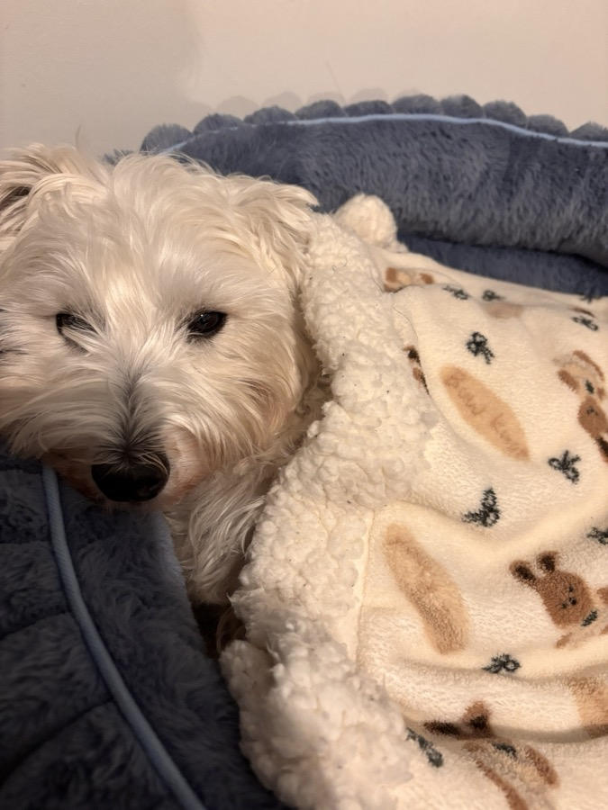
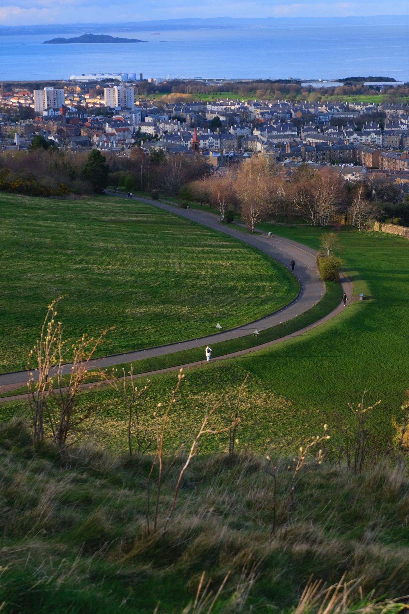
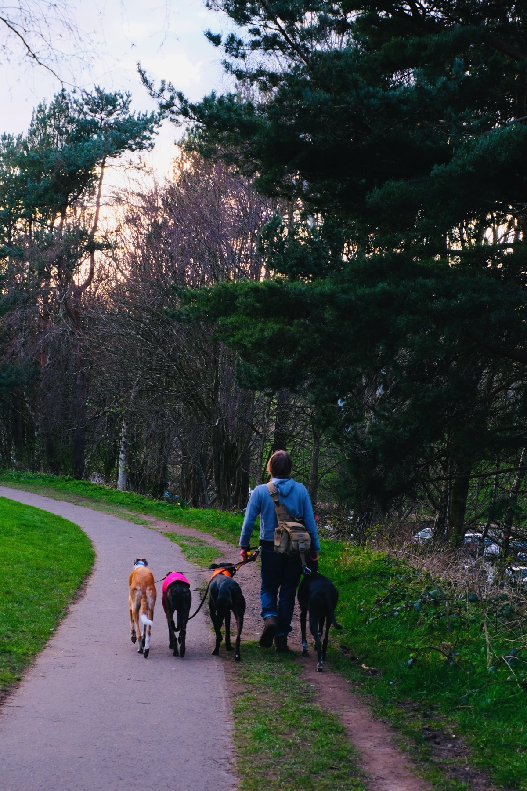
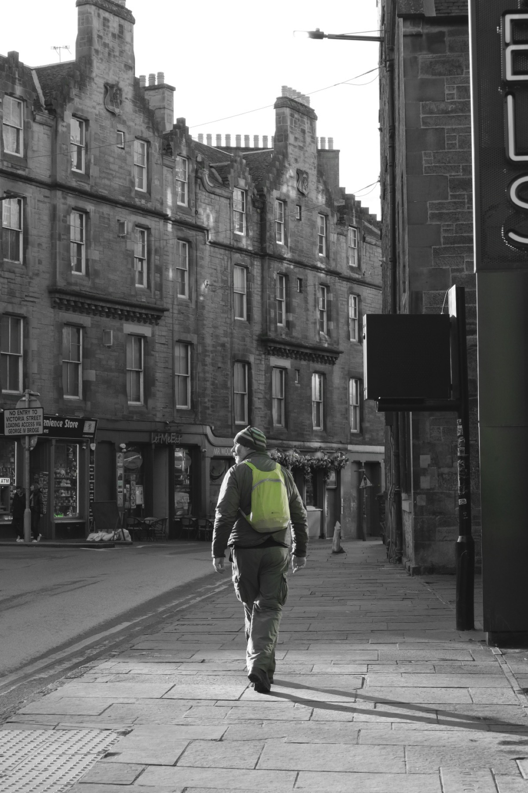
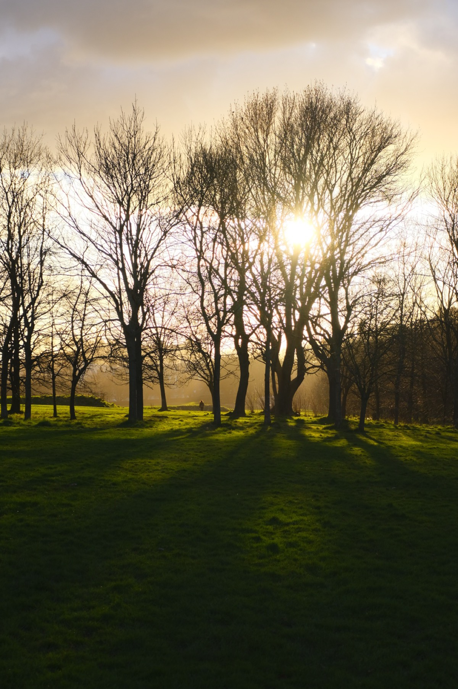

Personal
Outside research, I like bouldering, playing basketball, taking photos, listening to music, and looking for good food.

A Small Detour
I once studied finance, but gradually realized it was not what I truly wanted to do. After one year, I took a gap year to intern, explore different possibilities, and think more carefully about what I cared about. I eventually decided to study courses related to the human mind. It feels like a vast field: even with a lifetime, one may only catch a small glimpse of it. I hope I can keep curiosity with me and have fun along the way.
- Bouldering is one of my favorite ways to reset after work.
- I enjoy playing basketball and following the rhythm of a good game.
- Photography helps me notice small details in everyday places.
- Music is always around, whether I am working, walking, or cooking.
- I especially love food: finding good restaurants, sharing meals, and remembering places through what I ate there.
Selected Photography




Small Things I Like
I like keeping this page a little warmer than the academic pages: Kiwi, Usagi, photos, music, and food memories.